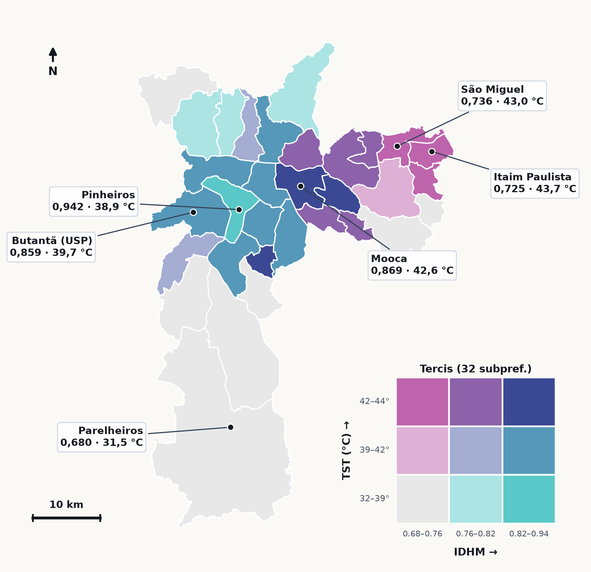
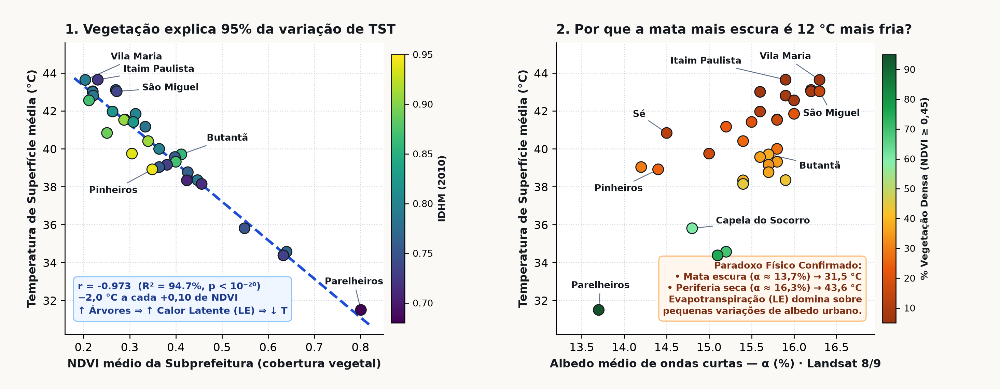
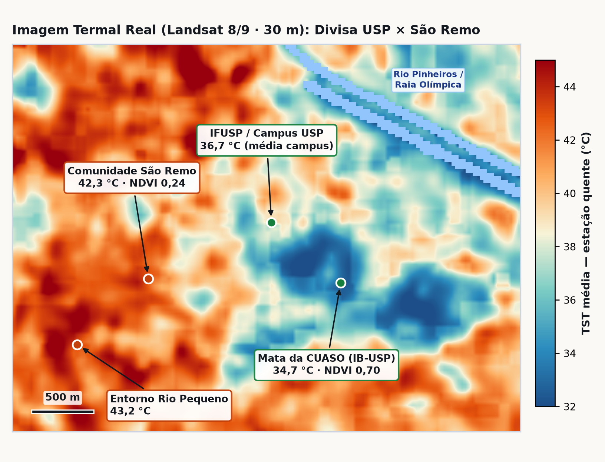

Ilhas de calor urbanas, física do balanço energético e contraste socioambiental entre Jardim Paulista, Vila Jacuí e Cidade Universitária
Variação térmica máxima no verão paulistano (e 7,9 °C no inverno) entre Jardim Paulista e Vila Jacuí.
Fonte: Reis e Galvani (2025) · Monitoramento microclimático
A incidência solar no topo da atmosfera é idêntica nas zonas Oeste e Leste. A divergência térmica nasce da superfície urbana: cobertura arbórea, impermeabilização e adensamento.
Uma variação de 8,8 °C dentro da mesma metrópole equivale à diferença climática entre cidades separadas por centenas de quilômetros.
Sobrecarga cardiovascular e respiratória em idosos e crianças.
Calor retido nas superfícies reduz o resfriamento noturno e prejudica o sono.
Maior demanda domiciliar por ventilação e refrigeração elétrica.
Telhas finas e ausência de isolamento térmico ampliam o desconforto interno.

| Subprefeitura | TST Média | IDHM | Perfil Urbano |
|---|---|---|---|
| Itaim Paulista (ZL) | 43,7 °C | 0,725 | Periferia adensada, pouco verde |
| São Miguel (ZL) | 43,0 °C | 0,736 | Inclui Vila Jacuí; solo impermeável |
| Mooca (Leste) | 42,6 °C | 0,869 | Corredor industrial e viário |
| Butantã · USP (ZO) | 39,7 °C | 0,859 | Resfriado pela Cidade Universitária |
| Pinheiros (ZO) | 38,9 °C | 0,942 | Inclui Jardim Paulista; arborizado |
| Parelheiros (Sul)* | 31,5 °C | 0,680 | Mata Atlântica e represas |
Leitura espacial (32 subprefeituras · Landsat 8/9): Na mancha urbana consolidada, menor IDHM coincide com picos de TST (> 43 °C). *Parelheiros é exceção por preservar Mata Atlântica e mananciais.
A arborização, a impermeabilização do solo e a densidade construtiva reorganizam o balanço de energia na superfície e produzem microclimas distintos sob o mesmo clima regional.
A resposta térmica de uma superfície depende de sua capacidade térmica (m · c) e da disponibilidade de água para mudança de fase (Lᵥ ≈ 2,45 × 10⁶ J/kg).
Propagação de calor por contato em meios sólidos, como da superfície do asfalto e das lajes para o interior das edificações.
Transporte de energia pelo movimento do ar aquecido; ruas estreitas e adensadas reduzem a ventilação e retêm o calor.
Emissão de ondas longas (8–14 μm) pelas superfícies aquecidas, que reaquece o ar e é medida pelos satélites Landsat.
Intercepta a radiação solar de ondas curtas antes do pavimento.
Converte energia térmica em calor latente (LE), resfriando o ar.
Retém material particulado e eleva a umidade relativa local.

r = −0,973 (R² = 94,7%, p < 10⁻²⁰): cada +0,10 de NDVI reduz ~2,0 °C na temperatura de superfície.
Mata escura (α ≈ 13,7% → 31,5 °C) é 12 °C mais fria que periferia seca (α ≈ 16,3% → 43,6 °C): LE domina.
Vegetação contínua e reservas de Mata Atlântica reduzem a temperatura do campus.
Bosques, praças e gramados ampliam a retenção hídrica e a umidade local.
O entorno urbano adensado fora dos muros da USP aquece muito mais rápido.

Plantio nativo em calçadas e corredores quentes.
Revestimentos claros elevam o albedo (65–80%).
Isolamento térmico, retenção hídrica e evapotranspiração.
Corredores verdes reduzem a vulnerabilidade climática.
| Intervenção Urbana | Mecanismo Físico | Efeito no Balanço Térmico | Horizonte |
|---|---|---|---|
| Telhados Refletivos | Aumento do albedo (α → 65–80%) | Reduz radiação absorvida (↓ Rn) | Curto prazo |
| Arborização Viária | Sombreamento e evapotranspiração | Eleva calor latente (↑ LE) | Médio prazo |
| Telhados Verdes | Inércia térmica e retenção hídrica | Reduz fluxo interno (↓ G) | Médio prazo |
| Parques Periféricos | Ilha de frescor e ventilação | Alivia picos em escala de bairro | Longo prazo |
Compreender o balanço energético das superfícies urbanas permite articular ciência física, planejamento territorial e mitigação das desigualdades térmicas.